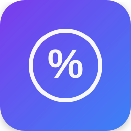

O Controle de Caixa & Juros Pro calcula juros retroativos automaticamente, gerencia cofrinhos com prazo e gera relatórios profissionais — direto no seu PC, com privacidade total.
Quero controlar meus juros →Pagamento único • Licença vitalícia • Garantia de 7 dias
Sem complicação: o app calcula automaticamente quanto você ganhou (ou perdeu) em juros.
Se você tinha R$ 1.000,00 e depositou mais R$ 200,00 no mês, o app calcula:
Resultado: você descobre exatamente quanto seus dinheiro renderia em juros — sem planilha, sem conta manual.
Sem complicação, sem planilha quebrada, sem assinatura.
O app calcula automaticamente os juros de cada mês com base nas movimentações das suas contas.
Defina prazos para seus cofrinhos e acompanhe o progresso com barras de cor por urgência.
Gere relatórios anuais profissionais com gráficos, tabelas e exportação em PDF ou CSV.
Gráficos de barras, cards de resumo e navegação por mês para acompanhar tudo de relance.
Exporte e restaure seus dados em um clique. Nunca mais perca o histórico financeiro.
Seus dados ficam no SEU computador, offline. Nada vai para a nuvem sem você querer.
Tanto para organizar a vida pessoal quanto para gerir empréstimos e investimentos.
R$ 47,00
pagamento único • sem mensalidade • licença vitalícia
✅ Garantia incondicional de 7 dias — não gostou? Devolvemos 100% do valor.
Ficou alguma dúvida? Veja as respostas:
Sim! O Controle de Caixa & Juros Pro funciona em qualquer PC com Windows 10 ou superior (64 bits). Não precisa de internet para usar.
Não. É um pagamento único de R$ 47 e a licença é sua para sempre, incluindo atualizações.
Cada licença ativa o app em 1 computador. Trocou de máquina? É só falar com o suporte que transferimos sua licença gratuitamente.
Não. Tudo fica armazenado apenas no seu computador, com proteção por backup exportável. Sua vida financeira é só sua.
O app calcula juros retroativos automaticamente com base nas movimentações das suas contas. A fórmula é: Juros = Novo Saldo − Saldo Anterior − Entradas + Saídas.
Imediatamente após o pagamento aprovado pela Kiwify, você recebe o link para baixar o instalador + sua chave de ativação por e-mail.
Você tem 7 dias de garantia incondicional. Basta pedir o reembolso pela Kiwify e devolvemos 100% do valor, sem perguntas.
Tem sim! Suporte direto por e-mail para instalação, ativação e dúvidas de uso.
R$ 47 à vista • Garantia de 7 dias • Entrega imediata